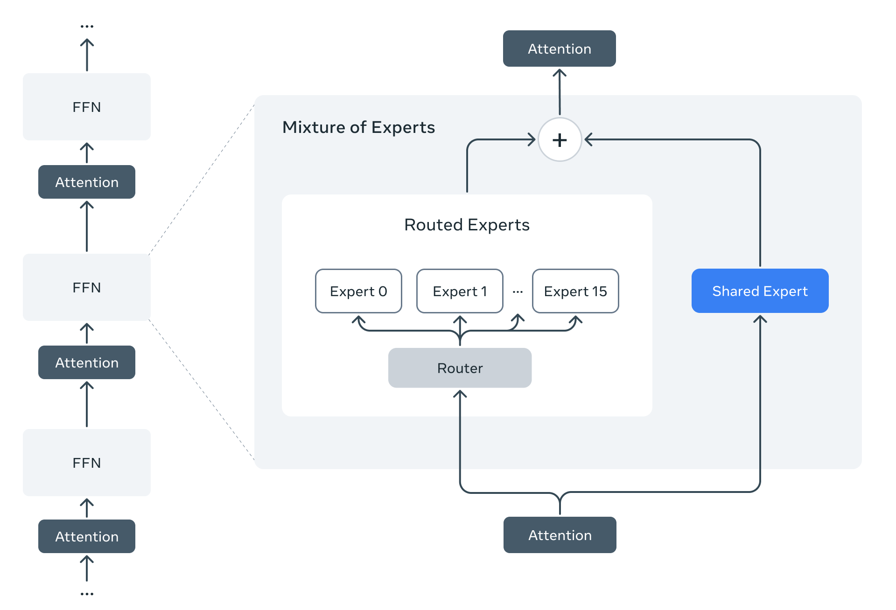
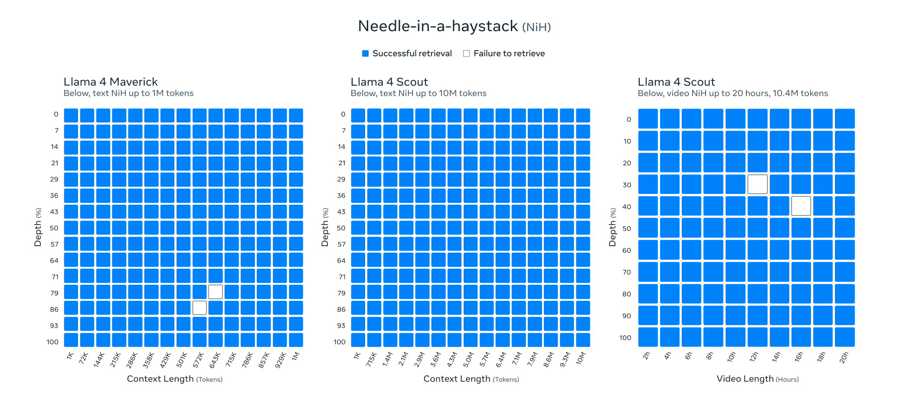
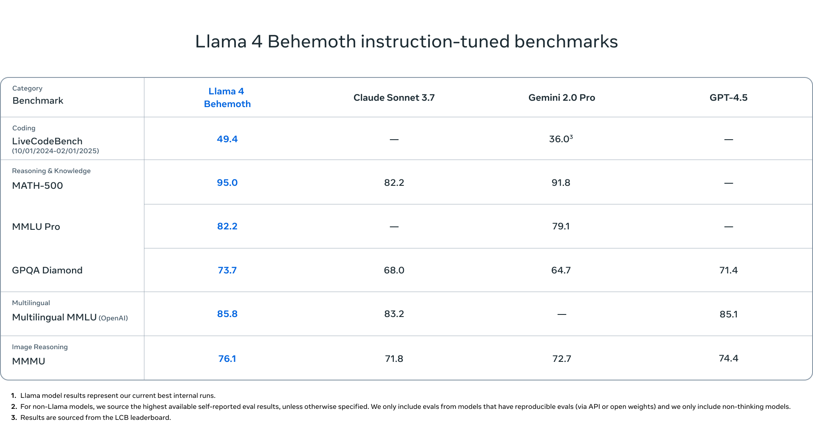

Takeaways
- We’re sharing the first models in the Llama 4 herd, which will enable people to build more personalized multimodal experiences.
- Llama 4 Scout, a 17 billion active parameter model with 16 experts, is the best multimodal model in the world in its class and is more powerful than all previous generation Llama models, while fitting in a single NVIDIA H100 GPU. Additionally, Llama 4 Scout offers an industry-leading context window of 10M and delivers better results than Gemma 3, Gemini 2.0 Flash-Lite, and Mistral 3.1 across a broad range of widely reported benchmarks.
- Llama 4 Maverick, a 17 billion active parameter model with 128 experts, is the best multimodal model in its class, beating GPT-4o and Gemini 2.0 Flash across a broad range of widely reported benchmarks, while achieving comparable results to the new DeepSeek v3 on reasoning and coding—at less than half the active parameters. Llama 4 Maverick offers a best-in-class performance to cost ratio with an experimental chat version scoring ELO of 1417 on LMArena.
- These models are our best yet thanks to distillation from Llama 4 Behemoth, a 288 billion active parameter model with 16 experts that is our most powerful yet and among the world’s smartest LLMs. Llama 4 Behemoth outperforms GPT-4.5, Claude Sonnet 3.7, and Gemini 2.0 Pro on several STEM benchmarks. Llama 4 Behemoth is still training, and we’re excited to share more details about it even while it’s still in flight.
- Download the Llama 4 Scout and Llama 4 Maverick models today on llama.com and Hugging Face. Try Meta AI built with Llama 4 in WhatsApp, Messenger, Instagram Direct, and on the web.
As more people continue to use artificial intelligence to enhance their daily lives, it’s important that the leading models and systems are openly available so everyone can build the future of personalized experiences. Today, we’re excited to announce the most advanced suite of models that support the entire Llama ecosystem. We’re introducing Llama 4 Scout and Llama 4 Maverick, the first open-weight natively multimodal models with unprecedented context length support and our first built using a mixture-of-experts (MoE) architecture. We’re also previewing Llama 4 Behemoth, one of the smartest LLMs in the world and our most powerful yet to serve as a teacher for our new models.
These Llama 4 models mark the beginning of a new era for the Llama ecosystem. We designed two efficient models in the Llama 4 series, Llama 4 Scout, a 17 billion active parameter model with 16 experts, and Llama 4 Maverick, a 17 billion active parameter model with 128 experts. The former fits on a single H100 GPU (with Int4 quantization) while the latter fits on a single H100 host. We also trained a teacher model, Llama 4 Behemoth, that outperforms GPT-4.5, Claude Sonnet 3.7, and Gemini 2.0 Pro on STEM-focused benchmarks such as MATH-500 and GPQA Diamond. While we’re not yet releasing Llama 4 Behemoth as it is still training, we’re excited to share more technical details about our approach.
We continue to believe that openness drives innovation and is good for developers, good for Meta, and good for the world. We’re making Llama 4 Scout and Llama 4 Maverick available for download today on llama.com and Hugging Face so everyone can continue to build new experiences using our latest technology. We’ll also make them available via our partners in the coming days. You can also try Meta AI with Llama 4 starting today in WhatsApp, Messenger, Instagram Direct, and on the Meta.AI website.
This is just the beginning for the Llama 4 collection. We believe that the most intelligent systems need to be capable of taking generalized actions, conversing naturally with humans, and working through challenging problems they haven’t seen before. Giving Llama superpowers in these areas will lead to better products for people on our platforms and more opportunities for developers to innovate on the next big consumer and business use cases. We’re continuing to research and prototype both models and products, and we’ll share more about our vision at LlamaCon on April 29—sign up to hear more.
Whether you’re a developer building on top of our models, an enterprise integrating them into your workflows, or simply curious about the potential uses and benefits of AI, Llama 4 Scout and Llama 4 Maverick are the best choices for adding next-generation intelligence to your products. Today, we’re excited to share more about the four major parts of their development and insights into our research and design process. We also can’t wait to see the incredible new experiences the community builds with our new Llama 4 models.
Pre-training
These models represent the best of Llama, offering multimodal intelligence at a compelling price while outperforming models of significantly larger sizes. Building the next generation of Llama models required us to take several new approaches during pre-training.
Our new Llama 4 models are our first models that use a mixture of experts (MoE) architecture. In MoE models, a single token activates only a fraction of the total parameters. MoE architectures are more compute efficient for training and inference and, given a fixed training FLOPs budget, delivers higher quality compared to a dense model.

As an example, Llama 4 Maverick models have 17B active parameters and 400B total parameters. We use alternating dense and mixture-of-experts (MoE) layers for inference efficiency. MoE layers use 128 routed experts and a shared expert. Each token is sent to the shared expert and also to one of the 128 routed experts. As a result, while all parameters are stored in memory, only a subset of the total parameters are activated while serving these models. This improves inference efficiency by lowering model serving costs and latency—Llama 4 Maverick can be run on a single NVIDIA H100 DGX host for easy deployment, or with distributed inference for maximum efficiency.
Llama 4 models are designed with native multimodality, incorporating early fusion to seamlessly integrate text and vision tokens into a unified model backbone. Early fusion is a major step forward, since it enables us to jointly pre-train the model with large amounts of unlabeled text, image, and video data. We also improved the vision encoder in Llama 4. This is based on MetaCLIP but trained separately in conjunction with a frozen Llama model to better adapt the encoder to the LLM.
We developed a new training technique which we refer to as MetaP that allows us to reliably set critical model hyper-parameters such as per-layer learning rates and initialization scales. We found that chosen hyper-parameters transfer well across different values of batch size, model width, depth, and training tokens. Llama 4 enables open source fine-tuning efforts by pre-training on 200 languages, including over 100 with over 1 billion tokens each, and overall 10x more multilingual tokens than Llama 3.
Additionally, we focus on efficient model training by using FP8 precision, without sacrificing quality and ensuring high model FLOPs utilization—while pre-training our Llama 4 Behemoth model using FP8 and 32K GPUs, we achieved 390 TFLOPs/GPU. The overall data mixture for training consisted of more than 30 trillion tokens, which is more than double the Llama 3 pre-training mixture and includes diverse text, image, and video datasets.
We continued training the model in what we call “mid-training” to improve core capabilities with new training recipes including long context extension using specialized datasets. This enabled us to enhance model quality while also unlocking best-in-class 10M input context length for Llama 4 Scout.
Post-training our new models
Our newest models include smaller and larger options to accommodate a range of use cases and developer needs. Llama 4 Maverick offers unparalleled, industry-leading performance in image and text understanding, enabling the creation of sophisticated AI applications that bridge language barriers. As our product workhorse model for general assistant and chat use cases, Llama 4 Maverick is great for precise image understanding and creative writing.
The biggest challenge while post-training the Llama 4 Maverick model was maintaining a balance between multiple input modalities, reasoning, and conversational abilities. For mixing modalities, we came up with a carefully curated curriculum strategy that does not trade-off performance compared to the individual modality expert models. With Llama 4, we revamped our post-training pipeline by adopting a different approach: lightweight supervised fine-tuning (SFT) > online reinforcement learning (RL) > lightweight direct preference optimization (DPO). A key learning was that SFT and DPO can over-constrain the model, restricting exploration during the online RL stage and leading to suboptimal accuracy, particularly in reasoning, coding, and math domains. To address this, we removed more than 50% of our data tagged as easy by using Llama models as a judge and did lightweight SFT on the remaining harder set. In the subsequent multimodal online RL stage, by carefully selecting harder prompts, we were able to achieve a step change in performance. Furthermore, we implemented a continuous online RL strategy, where we alternated between training the model and then using it to continually filter and retain only medium-to-hard difficulty prompts. This strategy proved highly beneficial in terms of compute and accuracy tradeoffs. We then did a lightweight DPO to handle corner cases related to model response quality, effectively achieving a good balance between the model’s intelligence and conversational abilities. Both the pipeline architecture and the continuous online RL strategy with adaptive data filtering culminated in an industry-leading, general-purpose chat model with state-of-the-art intelligence and image understanding capabilities.
As a general purpose LLM, Llama 4 Maverick contains 17 billion active parameters, 128 experts, and 400 billion total parameters, offering high quality at a lower price compared to Llama 3.3 70B. Llama 4 Maverick is the best-in-class multimodal model, exceeding comparable models like GPT-4o and Gemini 2.0 on coding, reasoning, multilingual, long-context, and image benchmarks, and it’s competitive with the much larger DeepSeek v3.1 on coding and reasoning.

Our smaller model, Llama 4 Scout, is a general purpose model with 17 billion active parameters, 16 experts, and 109 billion total parameters that delivers state-of-the-art performance for its class. Llama 4 Scout dramatically increases the supported context length from 128K in Llama 3 to an industry leading 10 million tokens. This opens up a world of possibilities, including multi-document summarization, parsing extensive user activity for personalized tasks, and reasoning over vast codebases.
Llama 4 Scout is both pre-trained and post-trained with a 256K context length, which empowers the base model with advanced length generalization capability. We present compelling results in tasks such as retrieval with “retrieval needle in haystack” for text as well as cumulative negative log-likelihoods (NLLs) over 10 million tokens of code. A key innovation in the Llama 4 architecture is the use of interleaved attention layers without positional embeddings. Additionally, we employ inference time temperature scaling of attention to enhance length generalization. We call this the iRoPE architecture, where “i” stands for “interleaved” attention layers, highlighting the long-term goal of supporting “infinite” context length, and “RoPE” refers to the rotary position embeddings employed in most layers.


We trained both of our models on a wide variety of image and video frame stills in order to give them broad visual understanding, including of temporal activities and related images. This enables effortless interaction on multi-image inputs alongside text prompts for visual reasoning and understanding tasks. The models were pre-trained on up to 48 images, and we’ve tested in post-training with good results up to eight images.
Llama 4 Scout is also best-in-class on image grounding, able to align user prompts with relevant visual concepts and anchor model responses to regions in the image. This enables more precise visual question answering for the LLM to better understand user intent and localize objects of interest. Llama 4 Scout also exceeds comparable models on coding, reasoning, long context, and image benchmarks and offers stronger performance than all previous Llama models.

These new models are important building blocks that will help enable the future of human connection. In keeping with our commitment to open source, we’re making Llama 4 Maverick and Llama 4 Scout available to download on llama.com and Hugging Face, with availability across the most widely used cloud and data platforms, edge silicon, and global service integrators to follow shortly.
Pushing Llama to new sizes: The 2T Behemoth
We’re excited to share a preview of Llama 4 Behemoth, a teacher model that demonstrates advanced intelligence among models in its class. Llama 4 Behemoth is also a multimodal mixture-of-experts model, with 288B active parameters, 16 experts, and nearly two trillion total parameters. Offering state-of-the-art performance for non-reasoning models on math, multilinguality, and image benchmarks, it was the perfect choice to teach the smaller Llama 4 models. We codistilled the Llama 4 Maverick model from Llama 4 Behemoth as a teacher model, resulting in substantial quality improvements across end task evaluation metrics. We developed a novel distillation loss function that dynamically weights the soft and hard targets through training. Codistillation from Llama 4 Behemoth during pre-training amortizes the computational cost of resource-intensive forward passes needed to compute the targets for distillation for the majority of the training data used in student training. For additional new data incorporated in student training, we ran forward passes on the Behemoth model to create distillation targets.

Post-training a model with two trillion parameters was a significant challenge too that required us to completely overhaul and revamp the recipe, starting from the scale of data. In order to maximize performance, we had to prune 95% of the SFT data, as opposed to 50% for smaller models, to achieve the necessary focus on quality and efficiency. We also found that doing lightweight SFT followed by large-scale reinforcement learning (RL) produced even more significant improvements in reasoning and coding abilities of the model. Our RL recipe focused on sampling hard prompts by doing pass@k analysis with the policy model and crafting a training curriculum of increasing prompt hardness. We also found that dynamically filtering out prompts with zero advantage during training and constructing training batches with mixed prompts from multiple capabilities were instrumental in providing a performance boost on math, reasoning, and coding. Finally, sampling from a variety of system instructions was crucial in ensuring that the model retained its instruction following ability for reasoning and coding and was able to perform well across a variety of tasks.
Scaling RL for a two trillion parameter model also required revamping our underlying RL infrastructure due to its unprecedented scale. We optimized the design of our MoE parallelization for speed, which enabled faster iteration. We developed a fully asynchronous online RL training framework that enhanced flexibility. Compared to the existing distributed training framework, which sacrifices the compute memory in order to stack all models in memory, our new infrastructure enabled flexible allocation of different models to separate GPUs, balancing resources across multiple models based on computational speed. This innovation resulted in a ~10x improvement in training efficiency over previous generations.
Safeguards and protections
We aim to develop the most helpful and useful models while protecting against and mitigating the most severe risks. We built Llama 4 with the best practices outlined in our Developer Use Guide: AI Protections. This includes integrating mitigations at each layer of model development from pre-training to post-training to tunable system-level mitigations that shield developers from adversarial users. In doing so, we empower developers to create helpful, safe, and adaptable experiences for their Llama-supported applications.
Pre- and post-training mitigations
For pre-training, we use data filtering in combination with other data mitigations to safeguard models. For post-training, we apply a range of techniques to ensure our models conform to policies that are helpful to users and developers, including the right level of safety data at each stage.
System-level approaches
At the system-level, we have open-sourced several safeguards which can help identify and guard against potentially harmful inputs and outputs. These tools can be integrated into our Llama models and with other third-party tools:
- Llama Guard: Our input/output safety large language model based on the hazards taxonomy we developed with MLCommons. Developers can use it to detect whether inputs or outputs violate the policies they’ve created for their specific application.
- Prompt Guard: A classifier model trained on a large corpus of attacks, which is capable of detecting both explicitly malicious prompts (Jailbreaks) as well as prompts that contain inject inputs (Prompt Injections).
- CyberSecEval: Evaluations that help AI model and product developers understand and reduce generative AI cybersecurity risk.
We’ve heard from developers that these tools are most effective and helpful when they can be tailored to their applications. We provide developers with an open solution so they can create the safest and most effective experiences based on their needs. We’ll also continue working with a global set of partners to create industry-wide system standards that benefit the open source community.
Evaluations and red-teaming
We run systematic testing of models across a wide range of scenarios and use cases in a controlled and repeatable manner. This produces data that we incorporate back into post-training.
We stress test our models using adversarial dynamic probing across a range of topics using automated and manual testing. We’ve made advancements in understanding and evaluating potential model risk. One example of this is our new development of Generative Offensive Agent Testing (GOAT). Using GOAT, we address the limitations of traditional red-teaming by simulating multi-turn interactions of medium-skilled adversarial actors, helping us increase our testing coverage and raise vulnerabilities faster. By adding automation to our testing toolkit, GOAT has allowed our expert human red teamers to focus on more novel adversarial areas, while the automation focuses on known risk areas. This makes the process more efficient and effective, and it enables us to build a better quantitative and qualitative picture of risk.
Addressing bias in LLMs
It’s well-known that all leading LLMs have had issues with bias—specifically, they historically have leaned left when it comes to debated political and social topics. This is due to the types of training data available on the internet.
Our goal is to remove bias from our AI models and to make sure that Llama can understand and articulate both sides of a contentious issue. As part of this work, we’re continuing to make Llama more responsive so that it answers questions, can respond to a variety of different viewpoints without passing judgment, and doesn't favor some views over others.
We have made improvements on these efforts with this release—Llama 4 performs significantly better than Llama 3 and is comparable to Grok:
- Llama 4 refuses less on debated political and social topics overall (from 7% in Llama 3.3 to below 2%).
- Llama 4 is dramatically more balanced with which prompts it refuses to respond to (the proportion of unequal response refusals is now less than 1% on a set of debated topical questions).
- Our testing shows that Llama 4 responds with strong political lean at a rate comparable to Grok (and at half of the rate of Llama 3.3) on a contentious set of political or social topics. While we are making progress, we know we have more work to do and will continue to drive this rate further down.
We’re proud of this progress to date and remain committed to our goal of eliminating overall bias in our models.
Explore the Llama ecosystem
While it’s important that models are intelligent, people also want models that can reply in a personalized way with human-like speed. As our most advanced models yet, Llama 4 is optimized to meet these needs.
Of course, models are one piece of the larger ecosystem that brings these experiences to life. We’re focused on the full stack, which includes new product integrations. We’re excited to continue the conversations we’re having with our partners and the open source community, and as always, we can’t wait to see the rich experiences people build in the new Llama ecosystem.
Download the Llama 4 Scout and Llama 4 Maverick models today on llama.com and Hugging Face. Try Meta AI built with Llama 4 in WhatsApp, Messenger, Instagram Direct, and on the Meta.AI website.
This work was supported by our partners across the AI community. We’d like to thank and acknowledge (in alphabetical order): Accenture, Amazon Web Services, AMD, Arm, CentML, Cerebras, Cloudflare, Databricks, Deepinfra, DeepLearning.AI, Dell, Deloitte, Fireworks AI, Google Cloud, Groq, Hugging Face, IBM Watsonx, Infosys, Intel, Kaggle, Mediatek, Microsoft Azure, Nebius, NVIDIA, ollama, Oracle Cloud, PwC, Qualcomm, Red Hat, SambaNova, Sarvam AI, Scale AI, Scaleway, Snowflake, TensorWave, Together AI, vLLM, Wipro.